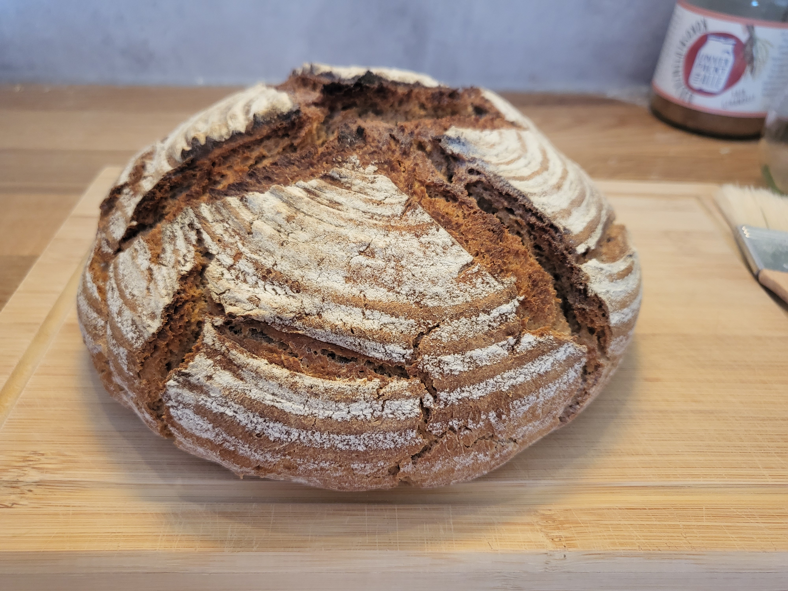

Würzig aromatisches Alpenroggenmehl trifft auf kleberstarkes Ciabattamehl. Ergibt ein würziges Brot mit elastischer und saftiger Krume. TA 182. Ergibt ca. 400g Brot.

Zutaten (Menge ×1)
Gib die gewünschte Menge an:
Sauerteig
Anstellgut
Roggenvollkornmehl
Wasser (45°C)
Hauptteig
Sauerteig
Alpenroggenmehl (oder Roggenmehl Type 1370)
Ciabattamehl Tipe 0 mit 14% Eiweiß (oder Weizenmehl Type 550)
Salz
Trockenhefe
Honig
Wasser (40°C) (bei Verwendung von Ersatzmehlen Menge mit 0.85 multiplizieren)
Utensilien
Gärkorb
Gusseisenpfanne
Sprühflasche
Ofeneinstellung
⏲ 240°C Ober-/Unterhitze fallend auf 210°C, 40 – 50 Minuten
Möglicher Zeitplan: Morgens um 9 Uhr den Sauerteig mischen, um 22 Uhr mit dem Hauptteig fortfahren und am selben Abend backen.
Sauerteig ansetzen
Das Anstellgut mit dem Wasser vermischen. Anschließend das Mehl hinzugeben und alles zu einer homogenen Masse vermischen.
12 – 14 h bei ca. 24°C reifen lassen.
Hauptteig
Trockenhefe und Honig im Wasser auflösen.
Den gereiften Sauerteig hinzugeben und im Wasser verteilen.
Restliche Zutaten dazugeben und alles manuell zu einer homogenen Masse verkneten.
Den Teig mit dem Knethaken 9 Minuten langsam kneten.
30 Minuten ruhen lassen.
Arbeitsfläche bemehlen, Gärkorb bemehlen und daneben stellen.
Den Teig auf die Arbeitsfläche kippen und rundwirken: D.h. die Ränder zur Mitte hin falten und dann den Teigling auf die bemehlte Arbeitsfläche umdrehen und noch etwas rund schieben.
Mit dem Schluss nach unten ins Gärkörbchen setzen und 50 Minuten ruhen lassen.
Nach 35 Minuten schonmal den Ofen mit Gusseisenpfanne auf 240°C Ober-/Unterhitze vorheizen.
Den Teig auf ein mit Backpapier ausgekleidetes Schneidebrett stürzen und 1 Minute warten.
Dann auf die Gusseisenpfanne heben und in den Ofen schieben.
Nach 2 Minuten kräftig Wasser in den Ofen sprühen und die Temperatur auf 210°C herunterregeln.
Ca. 40 – 50 Minuten weiter backen, bis eine braune und stellenweise dunkelbraune Kruste entstanden ist.